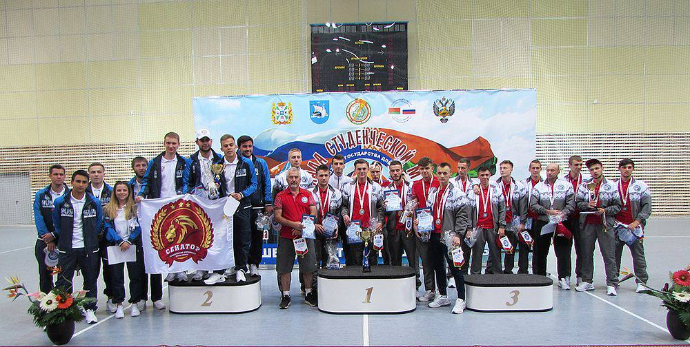

«Наше единство — наши победы»
Июньский Жлобин 2018 года: в город въезжают автобусы с логотипами университетов из Москвы, Казани, Санкт-Петербурга. Почти двести студентов из двадцати одного вуза двух стран съезжаются на берег Днепра, чтобы начать большой спортивный сезон Союзного государства. И начинается он — здесь.
Спартакиада Союзного государства среди детей и юношества существует с 2003 года. Её идея проста и по-человечески красива: пусть молодёжь Беларуси и России знакомится не в интернете, а на беговой дорожке, волейбольной площадке и футбольном поле. Каждый год Игры проходят в четыре этапа — два в Беларуси, два в России. В 2018-м первым принял старт именно Жлобин — и принял так, что делегации запомнили маленький город надолго.
Три дня Центр олимпийского резерва жил в режиме нон-стоп: лёгкая атлетика на дорожках, волейбол на паркете, мини-футбол под открытым небом. За медали бились команды БГУ и Белорусского государственного университета физкультуры, московских, казанских, петербургских, челябинских и курских вузов. Открывали соревнования представители Парламентского Собрания Союза и министерств спорта обеих стран — уровень, которого жлобинские трибуны видели нечасто.
Но главные впечатления случились не только на аренах. Спортсменов возили на экскурсию по Жлобину и в усадьбу Козел-Поклевских, а поездка в Красный Берег — к мемориалу «Памяти детей — жертв Великой Отечественной войны» — заставила замолчать даже самых шумных футболистов. Восемнадцатилетний спортсмен из Казани потом признавался журналистам, что ехал «на соревнования», а увёз «память на всю жизнь».
Атрибутика не разочаровала. Волейболистки Гродненского университета прошли турнир без единого поражения. В мини-футболе бронзу разыграли так драматично, что дело дошло до серии пенальти — 4:3. А дальше эстафету принимали Могилёв, Анапа и Волгоград. Но первый аккорд Спартакиады-2018, самый громкий и самый тёплый, прозвучал именно в Жлобине.